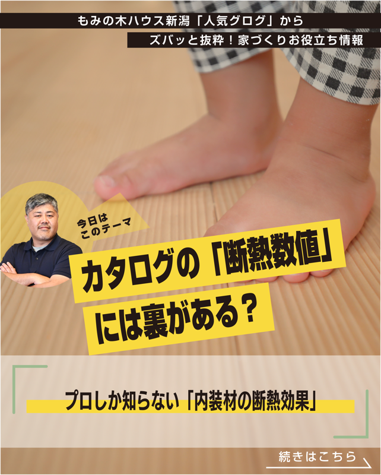

SECTION 02
Instagram投稿
バズを狙うのではなく、安定したリーチを積み上げて「聞かれなければ言わない」への導線を確保します。

P1: 表紙（タイトル+社長写真）

P6: LINE登録への導線（全社共通）
Instagramの役割
ブログの内容を6枚のスライドに変換して投稿します。P1〜P5で「家づくりで知っておくべきこと」を伝え、P6で「続きはLINEで」と誘導。P6のデザインは全社共通で「聞かれなければ言わない」への導線を組み込んでいます。
目的はバズることではありません。1投稿ごとに安定したリーチを出し続けることで、プロフィール経由のLINE登録を積み上げます。
新潟の現在の数値
フォロワー369人
投稿数111件（ストック300件まで生成済み）
ブログ記事数（投稿原料）717記事（412件未処理）
成長目標スケジュール（毎日1投稿を継続した場合）
3ヶ月後フォロワー500人 / 月間リーチ5,000
6ヶ月後フォロワー650人 / 月間リーチ7,500
12ヶ月後フォロワー900人 / 月間リーチ10,000
プロフィール訪問・リンククリックの安定化見通し
3ヶ月目: 月間プロフィール訪問250人
3ヶ月目: 月間LINEへのリンククリック10回
6ヶ月目: 月間プロフィール訪問375人
6ヶ月目: 月間LINEへのリンククリック15回
12ヶ月目: 月間プロフィール訪問500人
12ヶ月目: 月間LINEへのリンククリック20回
新潟の強み: ブログ717記事という膨大な投稿原料があります。大阪のIGは75日間で11,000人にリーチ（フォロワー911人）。新潟も同じ毎日投稿を継続することで、同等以上の成果を見込めます。算出はPV率5%、リンク率4%（大阪の実測値）を基にした保守的な見積もりです。